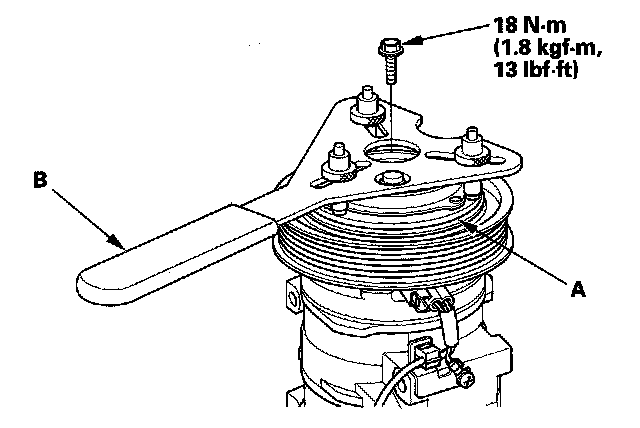
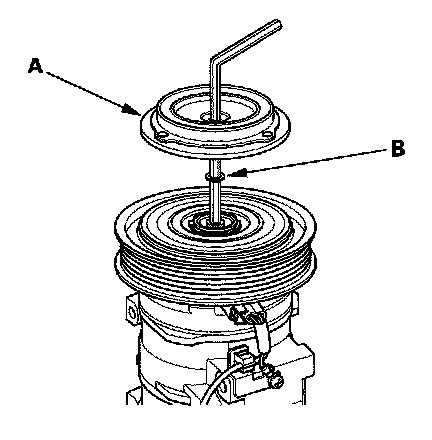
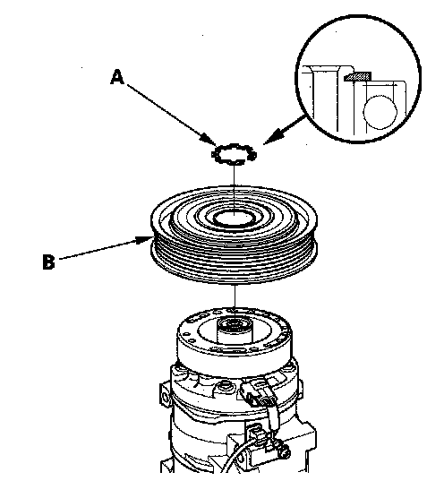
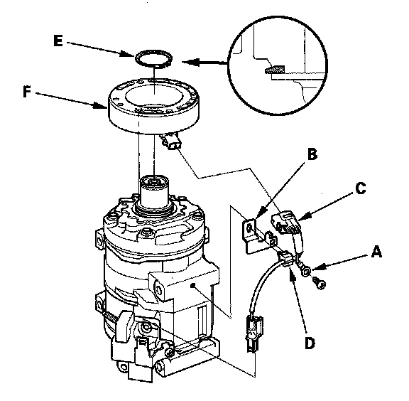

Compressor Clutch: Service and Repair
A/C Compressor Clutch OverhaulSpecial Tools Required
A/C clutch holder, Robinair 10204 or Kent-Moore J37872, or Honda Tool and Equipment KMT-J33939, commercially available

1. Remove the center bolt while holding the pressure plate (A) with a commercially available A/C clutch holder (B).

2. Remove the pressure plate (A) and shim(s) (B), taking care not to lose the shim(s). If the clutch needs adjustment, increase or decrease the number and thickness of shims as necessary, then reinstall the pressure plate, and recheck its clearance.
NOTE: The shims are available in three thicknesses: 0.1 mm, 0.3 mm, and 0.5 mm.

3. If you are replacing the field coil, remove the snap ring (A) with snap ring pliers, then remove the pulley (B). Be careful not to damage the pulley or the A/C compressor.

4. Remove the screw from the field coil ground terminal (A) and bracket (B). Disconnect the connector (C) from the field coil, then remove the wire harness clip (D). Remove the snap ring (E) with snap ring pliers, then remove the field coil (F). Be careful not to damage the field coil or the A/C compressor.
5. Reassemble the clutch in the reverse order of disassembly, and note these items:
- Install the field coil with the wire side facing down, and align the boss on the field coil with the hole in the A/C compressor.
- Clean the pulley and A/C compressor sliding surfaces with contact cleaner or other non-petroleum solvent.
- Install new snap rings, note the installation direction, and make sure they are fully seated in the groove.
- Make sure that the pulley turns smoothly after it's reassembled.
- Route and clamp the wires properly or they can be damaged by the pulley.